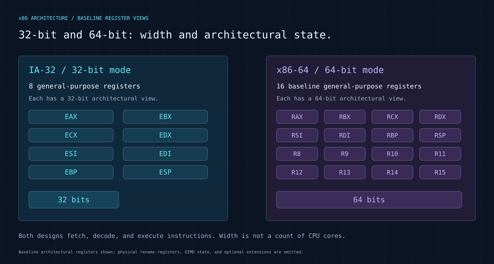
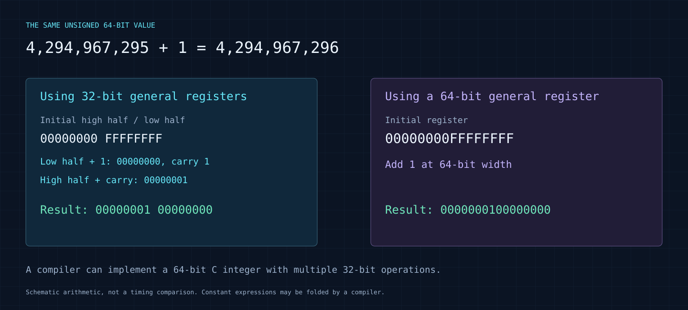
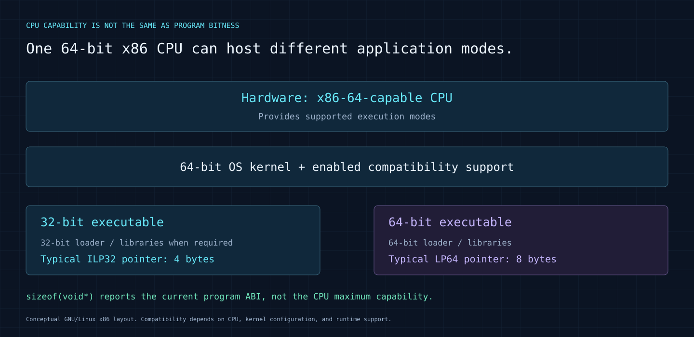

CPU: 32-bit vs 64-bit
What gets wider, what stays the same, and why a 32-bit program can run on a 64-bit CPU. Explore the architecture, try a small C program, and learn exactly what Linux's identification commands tell you.

The width of a register matters, but it is not the whole processor
Imagine a program reporting that its pointers are four bytes wide on a recent x86 computer. That can be perfectly correct: the program may be a 32-bit executable running in a compatibility environment on 64-bit-capable hardware.
In this article, 32-bit x86 means IA-32, and 64-bit x86 means x86-64, also called AMD64 or Intel 64. The label relates to the architecture's general-purpose register width and supported execution/addressing environment. It does not describe the number of CPU cores, the width of every instruction, or the width of every data path.
A 64-bit CPU capability, a 64-bit operating-system kernel, and a 64-bit application are three different properties. Keep them separate when interpreting any test.
A bit holds a binary 0 or 1. A 32-bit unsigned value has 2^32 possible bit patterns; a 64-bit unsigned value has 2^64. The ranges are 0 ... 4,294,967,295 and 0 ... 18,446,744,073,709,551,615, respectively.
Software can represent a 64-bit integer on a 32-bit CPU by using more than one word. Conversely, a 64-bit CPU still performs many operations on 8-, 16-, and 32-bit values. The architectural label is not a requirement to use the widest size for every operation. [x86 architecture manuals]
What changes inside the x86 execution environment
IA-32 architectural registers
The familiar IA-32 general-purpose registers are EAX, EBX, ECX, EDX, ESI, EDI, EBP, and ESP. Each has a 32-bit architectural view. Instructions use registers for arithmetic, addresses, counters, and other working state under the rules of the selected mode and ABI.
Baseline x86-64 architectural registers
x86-64 extends the general-purpose registers to 64-bit views such as RAX and RSP, and adds R8 through R15, for 16 baseline general-purpose registers. Older narrow views remain: EAX is the low 32-bit view of RAX. Optional extensions can add further state; the diagram shows the baseline, not every extension.
These are software-visible architectural registers. A modern implementation may have many more physical registers internally for register renaming and out-of-order execution. Neither count is a count of CPU cores.
The instruction pipeline is still a pipeline
Both kinds of processor fetch instructions, decode them, obtain operands, execute operations, and update architectural state. A modern x86-64 implementation may translate instructions into micro-operations and overlap independent work, as explained in the CPU vs GPU article. Wider registers alone do not determine pipeline depth, cache design, clock rate, or how much work can finish per cycle.
A large integer can use one wider word or several smaller words


For the two-half implementation, the low 32-bit half goes from FFFFFFFF to 00000000 with a carry. The high half increases from zero to one. The complete 64-bit result is 00000001 00000000, or 4,294,967,296.
A native 64-bit integer instruction can operate on that full-width register value directly. That can simplify some operations, but it does not establish a universal two-times speedup.
CPU capability, OS mode, and the executable ABI
The CPU provides supported execution modes. The OS kernel manages processes, privilege, and the environment in which those modes are used. An application binary interface (ABI) defines details such as type widths, argument passing, register conventions, and object layout for a compiled program.


A 64-bit-capable x86 CPU can support a legacy 32-bit execution environment, and a suitable 64-bit OS can run many 32-bit applications in compatibility mode. That requires OS support and, for dynamically linked applications, the appropriate loader and libraries. Hardware capability alone does not install those dependencies.
| Hardware / system | 32-bit x86 program | 64-bit x86 program |
|---|---|---|
| 32-bit-only x86 CPU | With a suitable OS and runtime. | No native x86-64 execution; emulation is a separate mechanism. |
| 64-bit-capable x86 CPU, 32-bit kernel | With suitable runtime support. | The CPU capability alone is insufficient for an ordinary native 64-bit process under this kernel. |
| 64-bit-capable x86 CPU, 64-bit kernel | When the kernel enables the required compatibility path and runtime support exists. | With the appropriate 64-bit runtime and supported instruction features. |
Compiling the same source twice with -m32 and -m64 changes the target program, not the physical processor. On a system that supports both, you can compare the two binaries on the very same CPU.
The differences worth remembering
| Property | 32-bit x86 / ILP32 | 64-bit x86 / LP64 |
|---|---|---|
| Baseline general-purpose registers | 8 architectural registers with 32-bit views. | 16 baseline architectural registers with 64-bit views. |
| Ordinary pointer width | 32 bits / 4 bytes. | 64 bits / 8 bytes. |
| C int width | Commonly 32 bits. | Commonly still 32 bits. |
| C long width | 32 bits under this ABI. | 64 bits under this ABI. |
| Explicit uint64_t | 64-bit type, implemented with supported instructions and sequences. | 64-bit type, with native 64-bit general-register operations available. |
| Linear address coordinate | 32 bits gives 4 GiB of possible byte addresses before OS layout limits. | A much larger coordinate, with implemented CPU and OS limits below the full 64-bit theoretical range. |
| Performance | Depends on code, ABI, implementation, and working set. | Can benefit from wider operations and register/ABI changes; not automatically twice as fast. |
Compile the same 14-line source in two modes
Save this as cpu-bits.c. It prints the sizes selected by the compiler's ABI and evaluates one unsigned 64-bit calculation.
#include <stdio.h>
#include <stdint.h>
int main(void) {
uint64_t number = 4294967295ULL;
number += 1;
printf("Pointer: %zu bytes\n", sizeof(void *));
printf("int: %zu bytes\n", sizeof(int));
printf("long: %zu bytes\n", sizeof(long));
printf("uint64_t: %zu bytes\n", sizeof(number));
printf("Value: %llu\n", (unsigned long long)number);
return 0;
}
Build on an x86 Linux development system
gcc -std=c11 -Wall -Wextra -O0 -m32 cpu-bits.c -o bits32
gcc -std=c11 -Wall -Wextra -O0 -m64 cpu-bits.c -o bits64
./bits32
./bits64For GCC's ordinary x86 targets, -m32 chooses 32-bit int, long, and pointer types with IA-32 code generation. -m64 chooses the x86-64 LP64 environment: int remains 32-bit while long and pointers become 64-bit. [GCC target options]
-O0 keeps optimization low for a teaching build. This example is not a benchmark: the compiler can still recognize constant values, and printing mostly tests the runtime output path.
If the 32-bit build or executable is unavailable
A 64-bit development installation may lack the 32-bit compiler libraries, C headers, or runtime loader. On an appropriate Debian/Ubuntu x86-64 system, the commonly relevant packages are gcc-multilib and libc6-dev-i386. Use your distribution's supported development packages and check kernel compatibility support.
A missing bits/libc-header-start.h, an incompatible linker library, or an absent 32-bit dynamic loader is an environment/dependency issue. It does not by itself mean that the CPU is 32-bit-only. You can also use separate native 32-bit and 64-bit Linux environments for the corresponding build and execution.
Expected output, explained line by line
These are reference outputs for common GNU/Linux x86 ILP32 and LP64 builds, not captured Linux executions. The source was compiled without warnings and executed on the available host to check the C code; that host uses a different ABI.
32-bit x86 build: ./bits32
Pointer: 4 bytes
int: 4 bytes
long: 4 bytes
uint64_t: 8 bytes
Value: 4294967296
64-bit x86 build: ./bits64
Pointer: 8 bytes
int: 4 bytes
long: 8 bytes
uint64_t: 8 bytes
Value: 4294967296
- Pointer: 4 versus 8 bytes shows the ordinary pointer width selected for this executable. On these targets, a byte is eight bits, giving 32 versus 64 bits.
- int: 4 bytes in both outputs. A 64-bit program does not make every integer 64-bit.
- long: 4 versus 8 bytes reflects the difference between the Linux ILP32 and LP64 data models used here.
- uint64_t: 8 bytes in both builds. The explicit-width type remains 64-bit even when ordinary pointers are 32-bit.
- Value: both produce 4,294,967,296 correctly. The type holds the value; the compiler chooses a suitable implementation for the selected target.
sizeof reports sizes in bytes. %zu prints the size value with the correct format. ULL marks an unsigned long long literal, and the cast to unsigned long long matches the %llu output format. The calculation uses unsigned 64-bit storage; it does not rely on overflowing a signed 32-bit int.
This program identifies its own data model. A four-byte pointer does not prove the physical CPU is 32-bit-only. Use the CPU-capability checks below to answer that separate question.
Portability detail: C does not require long and pointers to have the same width. For example, Windows x64 uses a model with four-byte long and eight-byte pointers. The Linux reference outputs above assume the ordinary GCC -m32 and -m64 ABIs. [Another documented C data model]
Use different checks for different questions
CPU capability: start with lscpu
lscpuRelevant fields on a typical x86-64 system can look like this:
Architecture: x86_64
CPU op-mode(s): 32-bit, 64-bitCPU op-mode(s) listing 64-bit indicates that the presented CPU supports a 64-bit execution mode. Listing both shows reported support for both modes. That still does not guarantee that a particular OS installation provides every legacy loader/library.
lscpu collects architecture information exposed through system interfaces. In a virtual machine, it describes the guest-visible CPU configuration, which can differ from the physical host. Output layout varies with tool version and locale. [lscpu documentation]
Additional x86 evidence: the long-mode flag
grep -w lm /proc/cpuinfoIn x86 feature flags, lm denotes long-mode support. A matching flags line can provide positive evidence of the exposed capability. Do not treat a missing flag alone as a definitive diagnosis of 32-bit-only hardware: kernel exposure and virtual-machine configuration matter. For ambiguous cases, check the exact processor model's official specification or a suitable CPUID-based tool. [Linux CPU feature-flag guidance]
Reported machine architecture: uname -m
uname -mA common result is:
x86_64This identifies the machine architecture reported to the process and is commonly used to identify an x86-64 kernel environment. It is not a complete independent hardware-capability probe. A 32-bit program can run under a 64-bit kernel, and execution personalities can alter the reported machine name. [uname] [Reported-architecture overrides]
The user-space data-model view: getconf LONG_BIT
getconf LONG_BITOn an ordinary 64-bit GNU/Linux user-space environment, the result is commonly:
64The value describes the configured width of long in the utility's environment. In the usual Linux data models this helps distinguish 32-bit and 64-bit user space. It does not directly measure the maximum capability of the CPU, and a 32-bit user-space environment can coexist with a 64-bit kernel. [Configuration environment]
The executable itself: file and readelf
file ./bits32 ./bits64
readelf -h ./bits32
readelf -h ./bits64Expected identifying fields, with build-specific details omitted:
bits32: ELF 32-bit ... Intel 80386 ...
bits64: ELF 64-bit ... x86-64 ...
bits32 header: Class: ELF32 Machine: Intel 80386
bits64 header: Class: ELF64 Machine: Advanced Micro Devices X86-64These describe the binaries. The phrase Intel 80386 is the ELF machine-family label for this 32-bit object format; it does not identify your actual CPU model. Likewise, the x86-64 machine name can say AMD even when the binary runs on a compatible Intel processor. [ELF inspection]
CPU capability: inspect the exposed CPU modes and model. Program bitness: inspect the executable or its pointer width. A kernel/user-space command answers its own environment question, not all three at once.
What changes for actual work
Wider integer operations and more architectural registers
Some calculations on large integers can use native 64-bit general-register operations instead of multiword sequences. The baseline x86-64 register set also gives compilers more general-purpose registers to work with. ABI differences can move more argument passing into registers under common conventions.
The benefit depends on the algorithm, compiler, calling convention, instruction set, and microarchitecture. A workload dominated by 32-bit values may already execute efficiently in either environment.
Address-intensive applications
A larger virtual-address coordinate lets a 64-bit application work with address layouts beyond the ordinary 32-bit per-process range, subject to CPU implementation and OS limits. This can enable larger datasets or more mappings in one process. That is a capacity/capability difference, not a guarantee that the same small dataset is processed faster.
Pointer-heavy data structures can become larger
In the two ABIs used by the example, 1,000 plain pointers occupy 4,000 versus 8,000 bytes before any surrounding structure overhead. Wider pointers and different alignment can enlarge linked structures and change how much useful data fits in caches. Porting can improve one workload while increasing overhead in another.
Binary compatibility and interfaces
Object code, shared libraries, calling conventions, and structure layouts must match the relevant ABI. An ordinary 64-bit process cannot simply load an ordinary 32-bit shared library as though it were a matching 64-bit library. Separate processes can communicate through a deliberately defined interface, but that is different from mixing incompatible code in one address space.
Performance needs a measured workload
The 32/64-bit label is orthogonal to CPU-versus-GPU roles, core count, clock rate, and vector capabilities. It does not mean twice the cores, twice the instructions per cycle, or twice the application speed. Measure the same task with comparable inputs and conditions when studying performance.
Addressing and ABI details worth knowing
4 GiB is a 32-bit byte-address coordinate, not a promise of usable allocation
With 32 address bits, there are 2^32 = 4,294,967,296 byte addresses: 4 GiB. Operating-system layout and reserved mappings can leave less space available to an individual application's allocations.
Virtual and physical addressing are separate mechanisms. Features such as x86 PAE can change physical-address capability without turning an ordinary IA-32 process into a 64-bit-pointer process. Exact OS support and limits are a separate question.
A 64-bit pointer does not mean all 64 address bits are implemented
A full 64-bit byte coordinate would contain 2^64 addresses, or 16 EiB. Actual x86-64 implementations use smaller supported linear-address widths, commonly associated with 48-bit or 57-bit canonical-address rules, plus their own physical-address limits.
Kernel configuration and policy impose further limits. Linux's five-level paging documentation illustrates how supported address ranges and allocation policy differ from merely having 64-bit-wide registers. [Linux addressing details]
The x32 ABI is a useful exception to the pointer-size shortcut
GCC documents -mx32, a distinct ABI choice using x86-64 instruction generation with 32-bit int, long, and pointers. It requires specialized toolchain, kernel, and runtime support and is not part of this exercise.
Its existence reinforces the distinction: pointer width alone is not a universal description of CPU capability or the instruction set used by a program. The earlier tables intentionally compare the ordinary -m32 and -m64 environments. [GCC ABI choices]
SIMD widths and optional register extensions are separate features
A 32-bit x86 environment can support wider vector registers for suitable instructions. Likewise, x86-64 code can operate on values narrower or wider than 64 bits using the applicable instruction families. These features do not change the meaning of an ordinary pointer in the selected ABI.
The 16-register x86-64 diagram is the baseline general-purpose register set. Extensions such as Intel APX define additional general-purpose registers; physical implementation state and vector state are additional dimensions. [Optional architectural extension]
Common misconceptions to avoid
- “A 64-bit CPU cannot run a 32-bit program.” Many x86 systems support a compatibility path, subject to the kernel and runtime.
- “A 32-bit program cannot use a 64-bit integer.” The C example demonstrates an explicit 64-bit type in either build.
- “Every variable doubles in size.” int commonly remains four bytes in both ABIs in this article.
- “sizeof(void*) identifies the physical processor.” It identifies the program's pointer representation.
- “An x86_64 label guarantees every 64-bit instruction extension.” Specific extensions still need feature checks and OS support.
- “The 64-bit version must be twice as fast.” Width is one architectural property among many, and ABI/layout effects can change costs in either direction.
Technical sources
- Intel 64 and IA-32 architecture manuals — registers, operand sizes, addressing, and execution modes.
- GCC x86 options — -m32, -m64, and -mx32 code-generation/data-model choices.
- lscpu(1) — architecture reporting and virtualized environments.
- Linux x86 feature flags — interpreting exposed CPU features and the limits of missing flags.
- uname(1) and setarch(8) — reported machine architecture and execution personality.
- getconf(1p) — configuration values for the operating environment.
- GNU readelf — inspecting executable headers.
- Linux five-level paging — implemented addressing and user-space allocation behavior.
- Microsoft C/C++ data type ranges — a contrasting data model in which long remains four bytes.
- Intel APX — optional architectural state beyond the baseline register diagram.
- Ubuntu multilib package index — one distribution's tooling example.
The diagrams are original conceptual illustrations. Numeric outputs are expected GNU/Linux ABI examples, not captured dual-mode Linux runs. The C source was compiled with warnings treated as errors and executed on the available host; the two Linux targets require a suitable Linux environment. This is a type-width and representation experiment, not a performance benchmark.